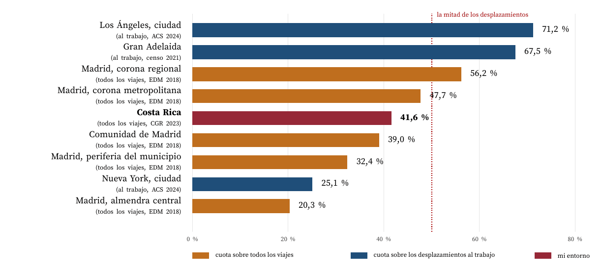
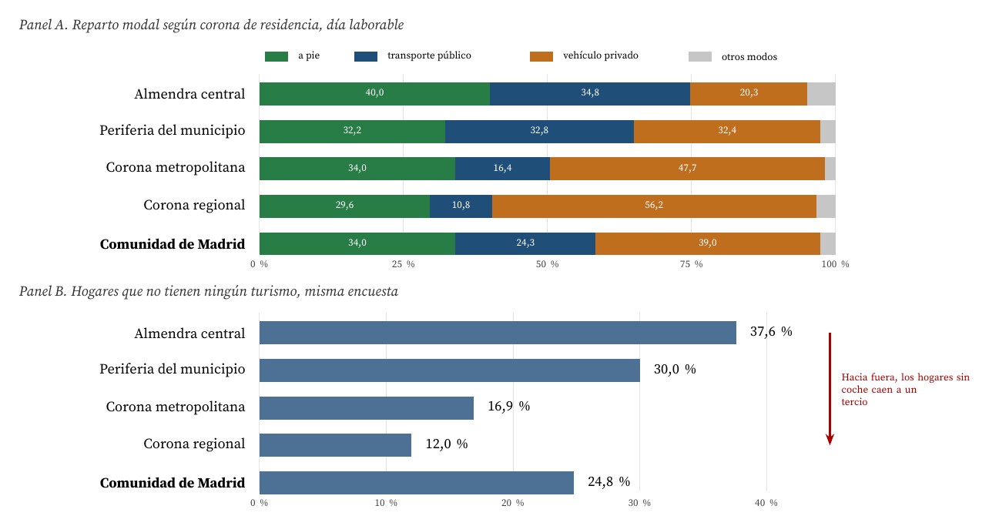
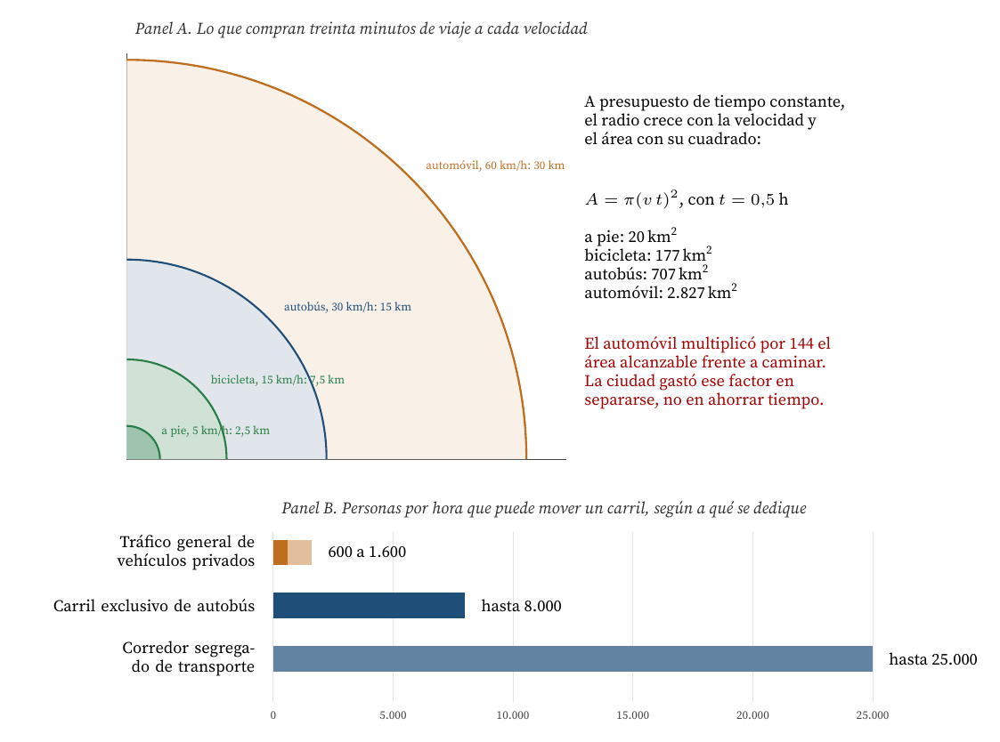
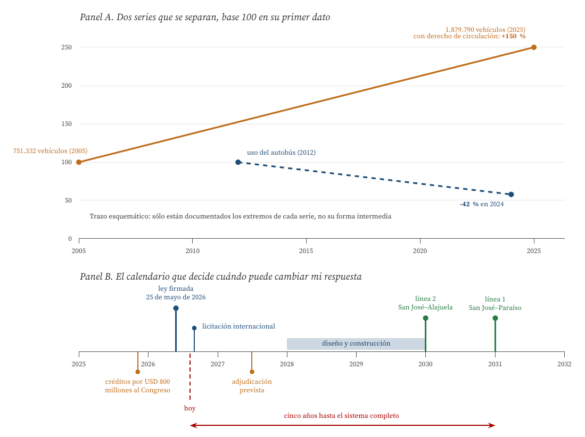

Por qué la misma tecnología produce cuotas del 20 al 71 por ciento según dónde se mida
Carlos Luis Rojas Aragonés
Sí, conduzco. Y no, hoy no puedo imaginarme una vida sin vehículo privado en la Gran Área Metropolitana de Costa Rica, donde vivo. Pero esa respuesta no dice nada interesante sobre mis preferencias: dice cuánto mide la distancia entre las cosas que necesito. En Costa Rica el 41,6 por ciento de los viajes se hace en vehículo privado motorizado y el 49,8 en autobús (Allen Monge, 2024); en la almendra central de Madrid el vehículo privado baja al 20,3 por ciento y en la corona regional de la misma comunidad autónoma sube al 56,2 (Consorcio Regional de Transportes de Madrid, 2019). Mismo país, misma flota, mismo precio del combustible, misma tecnología: la cuota se multiplica por 2,8 al cambiar de código postal.
El enunciado ya contiene la observación clave, que su entorno influye e incluso determina la respuesta, y conviene tomarla en serio hasta el final: si el mismo artefacto produce resultados que van del 20 al 71 por ciento según dónde se mida, entonces la variable explicativa no es el artefacto. La pregunta «¿puede vivir sin coche?» está mal planteada como pregunta tecnológica. Bien planteada es una pregunta de accesibilidad: ¿cuántos de mis destinos habituales caben dentro de mi presupuesto diario de tiempo de viaje sin usar un coche?
Esa reformulación tiene una consecuencia incómoda para quien decide sobre tecnología. Mejorar el automóvil, hacerlo eléctrico, autónomo o compartido, no mueve la variable que decide. La cambia el uso del suelo, y el uso del suelo se fija con decisiones de infraestructura cuyo plazo de maduración es de décadas. En mi caso esa fecha ya está puesta en un calendario: la ley de financiamiento del tren eléctrico de pasajeros de la GAM se firmó el 25 de mayo de 2026 (Instituto Costarricense de Ferrocarriles, 2026) y el sistema completo no operará antes de 2031 (Teletica, 2026). Mi respuesta de hoy es «no puedo», y la fecha más temprana en que podría cambiar no la decido yo.
Una figura de mérito (FOM) es una medida cuantitativa del desempeño de una tecnología en la función que presta (de Weck, 2022). El automóvil gana en casi todas las FOM del artefacto: velocidad punta, autonomía, protección frente a la lluvia, disponibilidad a cualquier hora, capacidad de carga. Si la comparación se hiciera ahí, el debate estaría cerrado. La discusión de este foro sólo tiene sentido porque la FOM que decide es otra, y es del sistema, no del vehículo. Tres resultados de la literatura la delimitan.
Juntando las tres piezas aparece el mecanismo completo, y es un bucle: el automóvil multiplica el radio accesible en un tiempo dado; la ciudad usa ese radio para separar la vivienda del trabajo y del comercio; una vez separados, el automóvil deja de ser una opción y pasa a ser un requisito de acceso al empleo. Es dependencia de trayectoria en el sentido estricto de David (1985) y Arthur (1989): cada decisión individual racional refuerza la configuración que hace obligatoria la siguiente. Lo que Newman y Kenworthy (1999) llamaron dependencia del automóvil no es un hábito cultural, es una propiedad geométrica del territorio ya construido.

Figura 1. Cuota del vehículo privado motorizado en nueve ámbitos. Las cuatro filas de Madrid y la de la Comunidad proceden de la encuesta domiciliaria de movilidad de 2018, sobre 15.800.000 desplazamientos diarios (Consorcio Regional de Transportes de Madrid, 2019); la de Costa Rica, de la Encuesta Nacional de Percepción de los Servicios Públicos de la Contraloría General de la República de 2023, recogida en Allen Monge (2024); las de Nueva York y Los Ángeles, de la tabla B08301 de la American Community Survey de 2024 (U.S. Census Bureau, 2025); la de Gran Adelaida, del censo australiano de 2021, sumando conductor (63,3 %) y acompañante (4,2 %) (Australian Bureau of Statistics, 2022). Las dos métricas no son intercambiables y por eso se distinguen con color; la discusión de esa limitación está en la sección de precisiones. Elaboración propia.
La Figura 1 ordena las cuotas del vehículo privado en los cuatro entornos que menciona el enunciado y en los míos. El resultado es una escalera continua, sin escalón entre «ciudades donde se puede» y «ciudades donde no», y con un rango de 3,5 veces entre el extremo inferior y el superior.
Dos lecturas conviene fijar antes de seguir.
La primera es que Nueva York y Los Ángeles no se diferencian por la tecnología disponible. Son el mismo país, el mismo mercado de automóviles, el mismo precio del combustible y prácticamente la misma regulación federal. En Nueva York el 48,7 por ciento de los ocupados va al trabajo en transporte público y el 25,1 en coche; en Los Ángeles esas cifras son 6,2 y 71,2 (U.S. Census Bureau, 2025). La misma fuente da el dato patrimonial, que es todavía más elocuente: el 56,7 por ciento de los hogares neoyorquinos no dispone de ningún vehículo, frente al 12,0 por ciento de los angelinos. La diferencia entre ambas ciudades es de forma urbana, no de artefacto.
La segunda es que el enunciado acierta al no oponer ciudad y campo. Gran Adelaida es una capital estatal con 1,4 millones de habitantes y una cuota del vehículo privado de 67,5 por ciento, superior a la de la corona regional de Madrid, que es el ámbito más periférico y menos urbano de la muestra española. Lo que separa a Adelaida de Madrid no es ser más o menos urbana, sino la densidad y la mezcla de usos con que se construyó.

Figura 2. El mismo territorio administrativo, la misma flota y el mismo precio del combustible, con cuatro resultados distintos. Datos de la encuesta domiciliaria de movilidad de la Comunidad de Madrid de 2018, publicada en noviembre de 2019 sobre 85.064 encuestas y 15.800.000 viajes diarios (Consorcio Regional de Transportes de Madrid, 2019). La almendra central es el interior de la M-30. Los porcentajes del Panel A suman cien por fila; los de «otros modos» incluyen moto, bicicleta, taxi y transporte discrecional, que en el conjunto de la región representan el 2,7 por ciento. Elaboración propia.
La Figura 2 es, a mi juicio, la pieza que resuelve el debate, porque se acerca todo lo que permite el mundo real a un experimento controlado. Dentro de una sola comunidad autónoma, con la misma oferta de vehículos, los mismos impuestos, el mismo clima y la misma cultura, la cuota del vehículo privado pasa del 20,3 al 56,2 por ciento y la proporción de hogares sin ningún turismo cae del 37,6 al 12,0 por ciento (Consorcio Regional de Transportes de Madrid, 2019). Lo único que cambia es la distancia a la que están las cosas.
Dos detalles refuerzan la lectura. El primero es que en la almendra central el transporte público (34,8 por ciento) supera al vehículo privado (20,3), y el modo más usado es simplemente caminar (40,0): en un entorno denso y mezclado, la alternativa dominante al coche no es otro vehículo, es la proximidad. El segundo es que el 37,6 por ciento de los hogares del centro de Madrid ya vive sin automóvil. No es una hipótesis de futuro ni una preferencia militante: es la conducta observada de más de un tercio de los hogares cuando el entorno lo permite.

Figura 3. Las dos restricciones que ninguna mejora del vehículo levanta. Panel A: identidad geométrica, no medición; las velocidades son ilustrativas y el presupuesto de media hora por sentido procede de Zahavi (1974) y Marchetti (1994). Panel B: capacidades por carril y sentido de la guía de diseño de calles con transporte público de National Association of City Transportation Officials (2016), que estima entre 600 y 1.600 personas por hora para un carril de tráfico general, hasta 8.000 para un carril exclusivo de autobús y hasta 25.000 para un corredor segregado. Elaboración propia.
Aquí es donde el debate suele desviarse. La respuesta habitual a los problemas del automóvil es una mejora del automóvil: eléctrico, autónomo, conectado, compartido. Es una respuesta razonable para una de las externalidades y completamente inocua para las demás, y la Figura 3 explica por qué.
La electrificación resuelve el tubo de escape y nada más. En Costa Rica el transporte genera el 41,55 por ciento de las emisiones nacionales de gases de efecto invernadero y el 75,4 por ciento de las del sector energía, y es la categoría que más ha crecido desde 1990, con un 243 por ciento (Instituto Meteorológico Nacional y Dirección de Cambio Climático, 2021; Programa de las Naciones Unidas para el Desarrollo, 2022). Cambiar la flota corrige ese problema, y por eso el Plan Nacional de Descarbonización lo prioriza (Gobierno de Costa Rica, 2019). Pero un vehículo eléctrico ocupa el mismo espacio en el carril, exige el mismo aparcamiento y produce prácticamente la misma congestión. En 2026 el país supera las 47.000 unidades eléctricas (Infobae, 2026), en torno al 2 por ciento de una flota de unos dos millones: incluso al cien por cien, la geometría del Panel B no se movería un milímetro.
La geometría es implacable y no depende del motor. Un carril dedicado a tráfico general mueve entre 600 y 1.600 personas por hora; el mismo carril dedicado a autobuses mueve hasta 8.000, y como corredor segregado hasta 25.000 (National Association of City Transportation Officials, 2016). La diferencia es de un factor de quince a cuarenta, y no la produce ninguna innovación de producto: la produce la decisión de repartir el espacio. A esto se añade que el activo está inmovilizado casi todo el tiempo: el automóvil medio británico permanece aparcado el 96 por ciento de las horas, el 80 en el domicilio y el 16 fuera de él (Bates y Leibling, 2012). Ninguna tecnología de propulsión mejora esa cifra de utilización.
Y la demanda inducida cierra el bucle. Si la mejora consiste en hacer más agradable o más barato conducir, el resultado previsible según Duranton y Turner (2011) no es menos tráfico, sino más kilómetros recorridos. El vehículo autónomo, tema del foro anterior de este mismo módulo, es el caso extremo: al eliminar el coste de conducir, elimina también el principal freno al kilometraje.

Figura 4. Panel A: los vehículos con derecho de circulación pasaron de 751.332 en 2005 a 1.879.790 en 2025, un crecimiento del 150 por ciento (El Observador, 2025), mientras el uso del autobús cayó un 42 por ciento entre 2012 y 2024 (Allen, 2026); una medición independiente de la Universidad Nacional cifra la caída de pasajeros en 42,2 por ciento entre octubre de 2018 y mayo de 2025, con un 24,2 por ciento menos de operadores y cerca de cien rutas abandonadas (Delfino.cr, 2026). Sólo se conocen los extremos de ambas series, de modo que el trazo intermedio es esquemático. Panel B: hitos del Tren Eléctrico de Pasajeros de la GAM, con 51,5 kilómetros de doble vía, 28 trenes y una capacidad proyectada superior a 100.000 pasajeros diarios (Instituto Costarricense de Ferrocarriles, 2026; Semanario Universidad, 2025; Teletica, 2026). Elaboración propia.
Mi entorno está en el tramo alto de la escalera, y empeorando. La Figura 4 muestra las dos series que definen el problema: la flota crece y el autobús se vacía al mismo tiempo. Es la señal más clara de que no estamos ante una elección de consumo sino ante una degradación de la alternativa, porque los dos movimientos se refuerzan: menos pasajeros implican menos frecuencia, menos frecuencia implica menos pasajeros, y unas cien rutas ya han desaparecido (Delfino.cr, 2026).
El coste agregado está cuantificado y es de primer orden. El Programa Estado de la Nación estimó que el tiempo perdido por congestión en la GAM equivale al 3,8 por ciento del producto interno bruto, del orden de 2.500 millones de dólares al año (Allen, 2026; Semanario Universidad, 2018); la Universidad Nacional eleva la cifra al 4 por ciento y la traduce a 400 millones de horas laborales anuales (Delfino.cr, 2026). En el plano doméstico, las familias costarricenses destinan el 15,6 por ciento de su ingreso mensual a transportarse (Allen Monge, 2024). Y en el plano humano, 2025 cerró con 572 muertes en sitio por siniestros de tránsito, la cifra más alta de la serie histórica, con los motociclistas concentrando el 46 por ciento de las víctimas (El Observador, 2026); la Organización Mundial de la Salud sitúa el total mundial en 1,19 millones de muertes anuales y recuerda que son la principal causa de muerte entre los 5 y los 29 años (World Health Organization, 2023).
Frente a eso, la respuesta institucional es la correcta en el papel: 51,5 kilómetros de tren eléctrico a doble vía entre Paraíso de Cartago y Alajuela, 28 trenes, 30 estaciones y una capacidad proyectada superior a 100.000 pasajeros diarios, financiados con unos 800 millones de dólares (Semanario Universidad, 2025). Pero el Panel B de la figura contiene la parte incómoda: la ley se firmó en mayo de 2026, la licitación empieza este año, la adjudicación se espera en 2027 y la operación completa no llega antes de 2031 (Teletica, 2026). Cinco años es el plazo mínimo, y sólo si nada se atrasa.
Formulada como pregunta de gestión tecnológica, la cuestión del foro tiene una respuesta operativa: mi respuesta cambia cuando se cumplan condiciones medibles, no cuando aparezca un vehículo mejor. Enumero las que considero necesarias, con el orden de magnitud que las haría creíbles.
El horizonte razonable, si todo lo anterior avanza, es el de la ciudad de proximidad que describe Moreno et al. (2021): no un mundo sin automóviles, sino un mundo en el que el automóvil deja de ser la condición de acceso al empleo. Nótese que esa es exactamente la situación que ya viven el 37,6 por ciento de los hogares de la almendra de Madrid y el 56,7 por ciento de los hogares de Nueva York (Consorcio Regional de Transportes de Madrid, 2019; U.S. Census Bureau, 2025).
¿Puedo imaginarme una vida sin vehículo privado? Puedo imaginarla con precisión, porque está documentada: la viven el 37,6 por ciento de los hogares del centro de Madrid (Consorcio Regional de Transportes de Madrid, 2019), el 56,7 por ciento de los de Nueva York (U.S. Census Bureau, 2025) y, en la práctica cotidiana, el 49,8 por ciento de los viajes que en mi propio país se hacen en autobús. Lo que no puedo es vivirla yo hoy, en la GAM, sin renunciar a una parte sustancial de mi acceso al trabajo y a los servicios.
Y esa asimetría es el punto. La diferencia entre unos y otros no está en el vehículo, que es el mismo en todas partes, ni en la convicción ambiental, que se distribuye de forma bastante pareja. Está en cuántos destinos caben dentro de media hora sin coche, y eso lo fijó quien decidió el uso del suelo hace veinte, cuarenta o setenta años. La escalera del 20 al 71 por ciento de la Figura 1 no mide preferencias: mide urbanismo.
La lección que me llevo como CTO se puede formular en una frase: cuando el desempeño observado de una tecnología varía por un factor de tres según el entorno donde se despliega, el objeto de la gestión ya no es la tecnología, es el entorno. Es el mismo error de nivel que discutimos en el foro del módulo anterior a propósito de IPv6: optimizar la figura de mérito del artefacto mientras la que decide el resultado es la del sistema. Aquí el sistema se llama densidad, mezcla de usos y reparto del espacio, y su constante de tiempo se mide en décadas, no en ciclos de producto.
Pregunta para el foro. Me interesa contrastar el dato con el resto del grupo, porque venimos de entornos muy distintos: en su ciudad, ¿cuánto tarda puerta a puerta el mismo trayecto en transporte público y en automóvil? Si la razón entre ambos supera el 1,5, mi hipótesis es que ustedes también conducen, con independencia de lo que opinen del automóvil. Y una segunda pregunta para quienes trabajan en industrias reguladas: ¿han visto algún caso en el que la mejora del producto haya conseguido, por sí sola, cambiar un resultado que en realidad estaba determinado por la infraestructura?
Allen, J. (2026, mayo). La cuenta regresiva: Costa Rica avanza hacia el punto de no retorno en movilidad urbana. El Financiero. https://www.elfinancierocr.com/economia-y-politica/la-cuenta-regresiva-costa-rica-avanza-hacia-el/23VBZ6TTPZF4RAVQUW6AK4ABZY/story/
Allen Monge, J. (2024). Transporte público en Costa Rica: ¿cuál es su estado actual comparado con otras ciudades? (Boletín técnico LanammeUCR, vol. 1, n. 7). Laboratorio Nacional de Materiales y Modelos Estructurales, Universidad de Costa Rica. https://www.lanamme.ucr.ac.cr/repositorio/handle/50625112500/2829
Arthur, W. B. (1989). Competing technologies, increasing returns, and lock-in by historical small events. The Economic Journal, 99(394), 116-131. https://doi.org/10.2307/2234208
Australian Bureau of Statistics. (2022). Greater Adelaide: 2021 Census all persons QuickStats. https://www.abs.gov.au/census/find-census-data/quickstats/2021/4GADE
Bates, J., y Leibling, D. (2012). Spaced out: Perspectives on parking policy. RAC Foundation. https://www.racfoundation.org/assets/rac_foundation/content/downloadables/spaced_out-bates_leibling-jul12.pdf
Cervero, R., y Kockelman, K. (1997). Travel demand and the 3Ds: Density, diversity, and design. Transportation Research Part D: Transport and Environment, 2(3), 199-219. https://doi.org/10.1016/S1361-9209(97)00009-6
Consorcio Regional de Transportes de Madrid. (2019). Encuesta de movilidad de la Comunidad de Madrid 2018. Documento de síntesis. Comunidad de Madrid. https://www.crtm.es/media/712934/edm18_sintesis.pdf
David, P. A. (1985). Clio and the economics of QWERTY. American Economic Review, 75(2), 332-337.
de Weck, O. L. (2022). Technology roadmapping and development: A quantitative approach to the management of technology. Springer. https://doi.org/10.1007/978-3-030-88346-1
Delfino.cr. (2026, julio). UNA: carrocentrismo asfixia carreteras costarricenses. https://delfino.cr/2026/07/carrocentrismo-asfixia-carreteras-costarricenses
Duranton, G., y Turner, M. A. (2011). The fundamental law of road congestion: Evidence from US cities. American Economic Review, 101(6), 2616-2652. https://doi.org/10.1257/aer.101.6.2616
El Observador. (2025). Parque automotor en Costa Rica creció 150 % en 20 años. https://observador.cr/parque-automotor-en-costa-rica-crecio-mas-del-doble-en-20-anos/
El Observador. (2026). Costa Rica cerró con 572 muertes en carretera en 2025: estos fueron los cantones con más decesos. https://observador.cr/costa-rica-cerro-con-572-muertes-en-carretera-en-2025-estos-fueron-los-cantones-con-mas-decesos/
Ewing, R., y Cervero, R. (2010). Travel and the built environment: A meta-analysis. Journal of the American Planning Association, 76(3), 265-294. https://doi.org/10.1080/01944361003766766
Gobierno de Costa Rica. (2019). Plan nacional de descarbonización 2018-2050. Ministerio de Ambiente y Energía. https://cambioclimatico.go.cr/plan-nacional-de-descarbonizacion/
Infobae. (2026, junio). El parque de autos eléctricos en Costa Rica superará las 47.000 unidades en 2026 impulsado por incentivos estatales. https://www.infobae.com/costa-rica/2026/06/02/el-parque-de-autos-electricos-en-costa-rica-superara-las-47000-unidades-en-2026-impulsado-por-incentivos-estatales/
Instituto Costarricense de Ferrocarriles. (2026, mayo). Ley de financiamiento para el tren eléctrico de pasajeros ya está firmada. https://www.incofer.go.cr/ley-de-financiamiento-para-el-tren-electrico-de-pasajeros-ya-esta-firmada/
Instituto Meteorológico Nacional y Dirección de Cambio Climático. (2021). Inventario nacional de gases de efecto invernadero y absorción de carbono 1990-2017. Ministerio de Ambiente y Energía de Costa Rica. https://cambioclimatico.minae.go.cr/inventario-nacional-de-gases-de-efecto-invernadero-ingei/
Marchetti, C. (1994). Anthropological invariants in travel behavior. Technological Forecasting and Social Change, 47(1), 75-88. https://doi.org/10.1016/0040-1625(94)90041-8
Moreno, C., Allam, Z., Chabaud, D., Gall, C., y Pratlong, F. (2021). Introducing the «15-Minute City»: Sustainability, resilience and place identity in future post-pandemic cities. Smart Cities, 4(1), 93-111. https://doi.org/10.3390/smartcities4010006
National Association of City Transportation Officials. (2016). Transit street design guide. Island Press.
Newman, P., y Kenworthy, J. (1999). Sustainability and cities: Overcoming automobile dependence. Island Press.
Programa de las Naciones Unidas para el Desarrollo. (2022). Transporte genera el 42 % de las emisiones de gases de efecto invernadero en Costa Rica. https://www.undp.org/es/costa-rica/comunicados-de-prensa/transporte-genera-el-42-de-las-emisiones-de-gases-de-efecto-invernadero-en-costa-rica
Semanario Universidad. (2018). Congestionamiento vial le costaría hasta un 3,8 % del PIB a Costa Rica cada año. https://semanariouniversidad.com/pais/congestionamiento-vial-le-costaria-hasta-un-38-del-pib-a-costa-rica-cada-ano/
Semanario Universidad. (2025). Tren eléctrico de pasajeros recorrerá 51,5 kilómetros entre Paraíso de Cartago y el centro de Alajuela y será a doble vía. https://semanariouniversidad.com/pais/tren-electrico-de-pasajeros-recorrera-51-5-kilometros-entre-paraiso-de-cartago-y-el-centro-de-alajuela-y-sera-a-doble-via/
Teletica. (2026). Sistema de tren eléctrico «Tibi» estará en funcionamiento total hasta el año 2031. https://www.teletica.com/nacional/sistema-de-tren-electrico-tibi-estara-en-funcionamiento-total-hasta-el-ano-2031_408934
U.S. Census Bureau. (2025). American Community Survey 2024, estimaciones de un año, tablas B08301 (means of transportation to work) y B25044 (tenure by vehicles available). https://api.censusreporter.org/1.0/data/show/latest?table_ids=B08301&geo_ids=16000US3651000,16000US0644000
World Health Organization. (2023). Global status report on road safety 2023. https://www.who.int/publications/i/item/9789240086517
Zahavi, Y. (1974). Traveltime budgets and mobility in urban areas (Informe PL-8183). U.S. Department of Transportation, Federal Highway Administration.